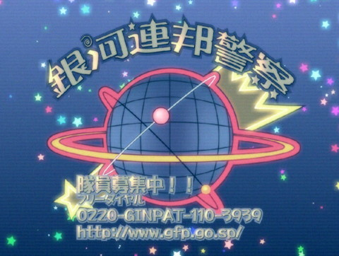
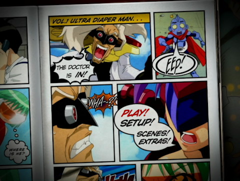

Dokkoida?! Anime Review
{kind=link}
Dokkoida?!
 / TV Series / Comedy / 16-up
/ TV Series / Comedy / 16-up
Bottom Line
Trips over itself occasionally, but unpredictable and plenty funny.
It’s Like...
...A parody of a superhero show gone horribly right.
Vital Stats
Original Title
住めば都のコスモス荘 すっとこ大戦ドッコイダー
Romanized Title
Sumeba Miyako no Kosumosu-Sou: Suttoko Taisen Dokkoidaa
Literal Translation
The "You Can Get Used To Living Anywhere" Cosmos Manor: The Idiotic Great Battle Dokkoider
US Release By
Sentai Filmworks, Geneon Entertainment (also Pioneer Animation)
Genre
Goofy Superhero From Space Comedy
Series Type
TV Series
Length
12 25-minute episodes
Production Date
2003-07-05 - 2003-09-20
What's In It
Categories
Look For
- Chronic Anticlimaxes
- Invaders From Space
- Incompetent Villains
- Incompetent Heroes
- Gratuitous Gimp Masks
Objectionable Content
- Violence: 2 (moderate)
- Nudity: 2 (moderate)
- Sex: 3 (significant)
- Language: 2 (moderate)
Plot Synopsis
The Galaxy Federation Police, facing a recruiting shortfall due to the routine slaughter of its officers, has a contract out for fancy new power armor. The test will be carried out on the backwater planet of Earth, using Earthlings as the operators, and will involve combatting a collection of the worst criminals in the galaxy, let out of prison on special probation as part of the test.
Meanwhile, on Earth, Suzuo is a 19-year-old guy fresh out of school and equally out of work. A job literally falls out of the sky when a scan reveals that he's a perfect fit for Otankonasu Co.'s prototype suit, Dokkoida. It doesn't pay well, and it involves combat with Class-A space criminals, but it does come with room and board at the Cosmos Manor... with those same Class-A criminals. Hey, the GFP's budget is tight.
Now Suzuo is living with his "little sister" (Otankonasu's diminutive and thrifty Tanpopo), the good-looking girl next door just happens to resemble his competition, Neruloid Girl (and her bitter, surly bunny, the Emerald Co. rep), a nice older fellow a few doors down bears a striking resemblance to the mad scientist Marronflower, a headstrong little neighbor girl might also be an alien mastermind, and the couple upstairs... do a lot of whipping and screaming.
Quick Review
Switch to Full ReviewDokkoida walks the well-trod "superhero who isn't really super" path, but it does so in a drunken stagger that keeps lurching off into the shrubbery. One episode will race past so fast that the punchlines are trampled and the gags seem to be out of breath, the next will be mellow and oddly melancholy, and after that it'll take an obvious set-up and do something equal parts standard turnabout, totally hilarious, and rather horrifying. To name a few examples: The "battles" elevate the anticlimax to an art form, the mad scientist is the only character with any drama to speak of, it's among the dirtiest things I've ever seen despite not having a single bit of nudity, sex, or even romance, it successfully pulls off a parody of the requisite hotspring episode by giving it a reality TV twist, and it holds the world record (I hope) for most dialogue with a guy in a gimp mask onscreen.
Point here being, it takes a stock framework and adds so many tweaks on expectation, borderline-disturbing moments, and hilarious-if-you-really-think-about-it situations that it ends up being surprisingly unpredictable and at times darned funny. It's got so much going on it trips over its own momentum occasionally, but I'm more than willing to forgive that for something this unexpectedly funny.
Full Review
Switch to Quick ReviewDokkoida looks to be an entirely predictable sort of parody, and it almost is. Almost.
If you were to glance at the box, you would expect Dokkoida to be yet another series about an unassuming young fellow who gets roped into playing superhero in a dorky-looking costume, and you would be right. You would expect it to feature a collection of flamboyant supervillains with personality quirks, and you would be right. You would expect at least one episode involving all the female characters, a hotspring, and voyuerism, and you would be right.
You would probably expect Dokkoida to be juvenile, unoriginal, rather tame, totally predictable, and pretty much yet another generic anime parody. This is where you would be wrong.
See, Dokkoida walks along the well-trod "superhero who isn't really super" path, but it does so in a drunken stagger that keeps lurching off into the shrubbery, and it sure doesn't keep off the grass. One episode will race past so fast that the punchlines are trampled and the gags seem to be out of breath, the next will be mellow and oddly melancholy, and after that it'll take an obvious set-up and do something equal parts standard turnabout, totally hilarious, and rather horrifying.
To start with, Dokkoida manages to elevate the anticlimax to an art form. It may look like it's full of somewhat goofy action, but more than half the episodes don't even have a battle, and every single one that does actually doesn't. Oh, they try, but the weather is too hot to bother fighting, the villains are so distracted they wander off halfway through, or their evil powers are malfunctioning so badly that the heroes just go home.
Then there's the fact that a series with no nudity at all (not even a transformation sequence!), no functional romantic tension, no traditionally crude jokes, and what would superficially seem to be elementary-school sensibilities is somewhere between dirty and way dirty. It probably sets the record for "most dialogue with a guy in a gimp mask onscreen," and if it doesn't, I certainly don't want to know what does. In fact, pretty much every moment the largely-mute (he's gagged, after all) Pierre is onscreen borders on horrifying.
On the far opposite end of the spectrum, you have the reality TV episode, which savages the obligatory hotspring trip as the base pandering it is. The cameramen (creepy little dudes hiding in the bushes, of course) take every possible opportunity to leer at the female characters in the most obvious and unsavory way. That alone was effective enough at making the sort of cheap thrills so many male-oriented series go for simultaneously funny and un-thrilling, and then it takes the fanservice gut-punch a step farther. The thing is, although they're age-ambiguous aliens, two of the girls appear to be way below the age of majority, and not only does Dokkoida most definitely go there, it proceeds to cut to the Reality TV audience and beat the viewer over the head with just how depraved you are if you were thinking along those lines.
Oh, and there are also innuendo-laden previews which, while not breaking any new ground, left me feeling like I needed to take a shower at least twice. So inappropriate.
Whether all this so-dirty-it's-not-at-all-erotic content is hilarious or horrifying is up to you (I vote both), but it's sure impressive. If nothing else, the preposterously busty dominatrix deserves points for bordering on naked every minute she's onscreen yet not seeming at all like fanservice--in part because the rest of the cast is proportioned something like actual humans, she actually works as a parody, rather than an excuse for gravity-defying cleavage.
On the more conventional front, there's the superhero business, which in fact isn't super or heroic at all. If you boil it down, the whole thing is a test project for a government contract, including the well-regulated villains, so the few people they manage to save (which isn't many) were only in danger in the first place because the government put them there. The titular protagonist is, if you read between the lines, essentially a marketing tool for a toy company whose superpower is the placebo effect. His heroic competition, Neruloid Girl, is well-funded, well-armed, better-looking, and basically totally outclasses him in everything but stupidity.
And in the end, Marronflower--seemingly the totally stock mad scientist--turns out to be by far the most competent member of the entire cast. He, of course, has a somewhat creepy fascination with dating sims, but that doesn't change the fact that he's the only serious one in the lot. In fact, he and his robot-in-a-maternal-but-attractive-body sidekick Kurika have the only dramatic bits in the series.
The bottom line here is that for such an apparently generic series it's amazingly unpredictable and darned funny for it. It also does enough just-plain-wrong things that it gets my seal of "Seriously Messed-Up Humor" approval... you've been warned.
The technical end of things is about par for this sort of TV series; the animation budget is good enough to support what little action there is, and sufficient to keep the visual gags and pratfalls lively. The character designs aren't original, but they are distinctive and likable. The mechanical design is generally ridiculous, which it's supposed to be.
I haven't watched the dub, but the Japanese version has plenty of variety in the veteran-heavy ensemble cast. Most importantly, the comic timing is good, though when it comes to really manic strings of gags it does trip over itself on occasion. Drama-wise, all you've got is Kurika and Marronflower, who are voiced capably by Sayaka Ohara and Kenichi Ogata. As for the two leads: Daisuke Namikawa (Suzuo) is well-cast as an everyman "hero," but sometimes sounds a little lower-energy than I'd have liked; Sawa Ishige is perfect as Tanpopo, the little girl who's not--appealing without being at all annoying.
Put everything together and you've got the framework of a generic comedy with so many tweaks on expectation, borderline-disturbing moments, and hilarious-if-you-really-think-about-it situations that it ends up being surprisingly unpredictable and usually darned funny. It's got so much going on it trips over its own momentum occasionally, but I'm more than willing to forgive that for something this unexpectedly funny.
Have something to say about this anime? Join our newly-resurrected forums and speak your mind.
Related Recommendations
Goofy superhero shows that come to mind are Moldiver (not nearly as silly), Twin Signal (also more serious), Tiger and Bunny (both more serious and more Marvel-style), The Daichis (very similar setup, very different character dynamics), and the ultimate sentai parody, Shinesman. I'll also give a nod to the wildly unpredictable comedy Jubei-chan as something in the same general vein, even if nearly every detail is different.
Notes and Trivia
Based on a 6-volume manga series written by Tarou Achi; the manga series only bears the first half of the incredibly long title of the anime: "Sumeba Miyako no Kosumosu-Sou" (rough translation "Cosmos Manor--You Can Get Used To Living Anywhere"). The manga version is now available in English from DC.
Speaking of titles, the second half of the anime's title ("Suttoko Taisen Dokkoidaa") is a play on the colorful phrase "suttokodokkoi," which basically means idiot/idiocy. Cut it in half and add the common "-der" suffix of Japanese superheroes, and you have Suttoko Dokkoider, very rough translation "Idiotder." The US release drops everything but the hero's name, and they chose to Romanize it directly as Dokkoida(a), rather than Dokkoider. Also, the toy company that built Dokkoida is "Otankonasu," which is another colorful word for "idiot."
Nearly all the characters are named after flowers; Suzuo's family name, Sakurazaki, includes the character for cherry blossom; Tanpopo means dandelion; the competing superhero's family name is Nogiku, meaning wild chrysanthemum, and her rabbit/handler is Hana, meaning "flower." With the sole exception of Pierre, the villains double up: Eidelweiss is a flower, and her Earth-cover family name is Umeki, meaning plum tree; the already-floral Hyacinth's cover name, Yurine, can mean lilly bulb. The mad scientist and his robot top them all, though; the Japanese word for chestnut comes from the French "marron," so Marronflower is obvious, while Kurika consists of the characters for chestnut and flower, and their cover family name, Kurinohana, includes the same two characters with a third to literally mean "flower of the chestnut." So basically every one of their names means exactly the same thing. Several minor characters continue the theme, as well.
On a related note, though Geneon went with it in the English translation, Kurika's name probably wasn't originally intended as a pun on Clicker.
The second episode starts out with a commercial for the beleaguered Galaxy Federation Police; in a particularly amusing little geeky touch at the end, in addition to a phone number it also includes the web address http://www.gfp.go.sp/ That's appealingly accurate; .sp is presumably the international domain extension for "space," and of course the GFP is a government entity, hence .go.sp. In case you're wondering, no, no country currently uses .sp, so that doesn't point anywhere.

US DVD Review
Geneon's DVDs, in addition to the expected bright, clean video and stereo audio in English and Japanese, offer creditless versions of the opening and ending, promo videos of Dokkoida, a concert video, and some cosplay stuff, all accessed through sharp-looking comic-book style menus (shown below). Some discs also included an iron-on insert for DIY Dokkoida shirts, and the first individual volume was sold with or without an artbox to hold the rest of the set. Later, the same DVDs were sold as a set in said artbox.
The license was picked up by Sentai Filmworks after Geneon closed shop, and they've released what appears to be more or less the same material on a two-disc box set.
Parental Guide
Although there's no nudity or actual hanky-panky at all, Dokkoida is spectacularly dirty. Aside from the really obvious--the underdressed dominatrix and guy in a gimp mask--there are a number of innuendo-laden previews and a hot springs episode that, while an effective parody, still involves a whole lot of unsavory leering. On balance it definitely earns the 16-up Geneon put on it.
Violence: 2 - There's a vast amount of destruction, but mostly unserious and entirely bloodless (at least that we see).
Nudity: 2 - No actual nudity, but a lot of skimpy S & M gear.
Sex/Mature Themes: 3 - No actual sex of any kind, but a whole lot of that S & M villain and few-punches-pulled innuendo.
Language: 2 - Nothing of note.
Availability
Currently available in North America from Sentai Filmworks on a bilingual 2-disc "complete collection" box set. This is more or less a re-release of the late Geneon's 3-DVD box set; the three volumes in that box set were previously available individually with or without an artbox to put them in.
RightStuf has the box set, or if you want to check it out on the cheap they still have plenty of stock of the first volume of the old Geneon release for $3: Disc 1/Disc 1 + Box.
Looking to buy? Try these stores:
RightStuf (search) |
AnimeNation |
Amazon